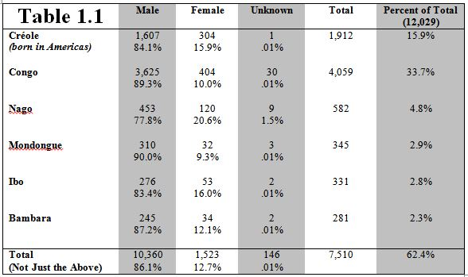
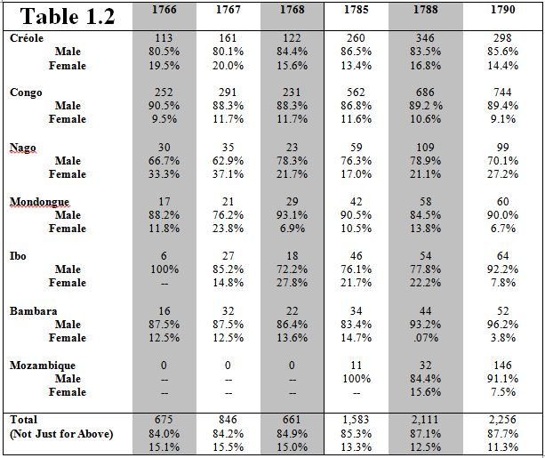

A key aspect that these documents address is slave ethnicity. Hall, along with several others, has written and shown that vital information about the slave trade and the lives of slaves are tied to their identity as members of African nations. This view is opposed to a long-held view that origins in Africa cannot be determined or did not matter, which Hall argues is dehumanizing and simply wrong.1 The documents from Les Affiches Américaines are very rich in their inclusion of African ethnicities, which appear to have been often provided by the slaves themselves. These ethnicities show the part of Africa from which the slaves of Saint-Domingue came from, their affiliations with others of the same ethnicity, and patterns of shipment and purchases made by slave traders and owners. The slave trade, and the social networks of the slaves, can be better understood as a result.
Of the more than 12,000 individual slaves in the prison lists, about 10,200 of them are identified by their “nation.” The consistency of this detail being in the newspaper is again due to the Council’s orders. Only 784 prisoners are unattached to a nation without explanation, such as if the slave was nouveau or if he or she refused to give an answer to the question. The result for scholars is a rich collection of ethonyms used by the French and the slaves themselves. Gwendolyn Midlo Hall has pointed out that French documents often have the most detailed list of African ethnicities, with an exception perhaps being the Cuban Emancipados registers.2 Controversy and debate exist, of course, over what the term “nation” meant to the Africans being asked, and how both Europeans and Africans separated ethnicity from language. But without being able to speak confidently about the changing, evolving ethnicities and politics of 18th century West and Central Africa, I will limit the discussion to what the sources on the American side of the Atlantic say, allowing those with more expertise to attempt that puzzle in the future.
Table 1.1 contains a breakdown of all prisoners of creole origin (born in the Americas), along with that of the five most populous ethnic designations from the sample. The percent of total column may seem low considering these are the largest ethnic groups, but that is simply because 15.0% of all prisoners were not reported as having an ethnic designation. Table 1.2 provides a more specific look at gender in maroon slaves by year. The earlier period of the 1760s are compared with the 1780s. While the largest ethnic groups shift somewhat, they remain largely the same, with the notable exception of Mozambique. The number of Senegambian slaves (Bambara, Mandingue, Sénégalais) is replaced with that from Mozambique, as more slaves are brought from southeastern Africa while the Senegambian slave trade declines throughout the 1780s.3
The Congos were the largest of the ethnic groups to enter the prisons, but this is unsurprising due to their massive numbers throughout the colony. They account for one-third of the entire sample, and that is even when including those slaves without nations in the documents, which if eliminated from the total here, would drive the percentage of Congo even higher. The proportion of Congolese in the prisons actually decreases over time, despite the increasing number of West Africans coming to the Americas.4
 The November and December prison lists from 1768 have not been indexed as of yet.Another aspect that can be analyzed using the data from the prison lists is gender. Most striking about the numbers in terms of gender is the fact that 86.1% of all maroon prisoners were male. This number is slightly higher than that of Jason Daniel’s (by ~2%), but this is likely explained by the selection of different sample years and his inclusion of runaway advertisements.5 Both percentages, however, are significantly higher proportions of males than that of the overall population in Saint-Domingue according to David Geggus’s calculations. Geggus states that over the period of 1719-1794, slave ships to the French colonies were about 65% male.6 Even when breaking gender down further by year, as seen in Table 1.2, females are still participating in marronage far less than the general population statistics of the colony. It is unclear exactly why this is so, as women were not necessary less exposed to the usual causes for marronage – in fact, French records have shown that at least among the recorded cases of abuse, women were treated far worse than males.7
Two ethnic groups do have a greater proportion of females en marronage, however. Creole women and Nago women consistently take part in marronage more than average for females, particularly the Nago. The larger proportion of creole women is understandable because of the natural sex ratio, which helps correct the imbalance the between males and females that exists from the slave trade. The Nago women’s reasons, however, are more unclear. The ethnic breakdown for Saint-Domingue is difficult to attain beyond coastal regions, so it is hard to ascertain whether the Nago were simply more evenly proportioned in terms of gender or if it relates to a more cultural reason.
Overall, the numbers show that males were much more likely to participate in marronage. The proportions of each ethnic designation, however, generally match the patterns of the slave trade. It is difficult to obtain accurate breakdowns of African ethnicity, as most studies report aggregates from shipping records and therefore list the coast of departure rather than the actual ethnic origin. A more comprehensive study of records in Saint-Domingue needs to be attempted in order to gain a more accurate picture of African origins in the colonies. The prison lists provide a good entryway and show that the information is being recorded, but it is just a cross section of the population and cannot be used to analyze the entirety of the colony.